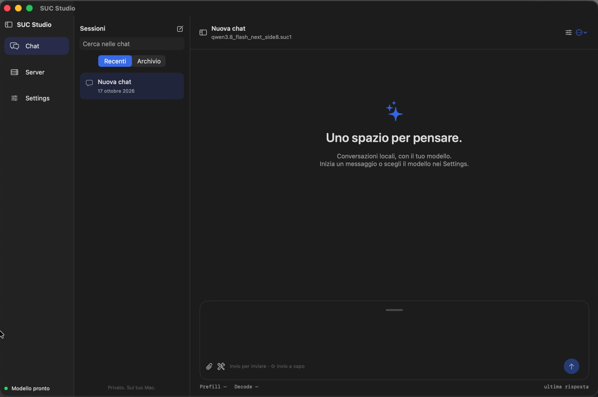
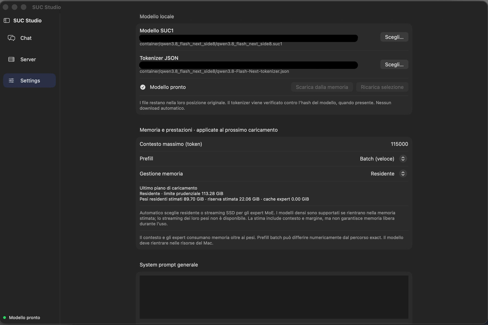
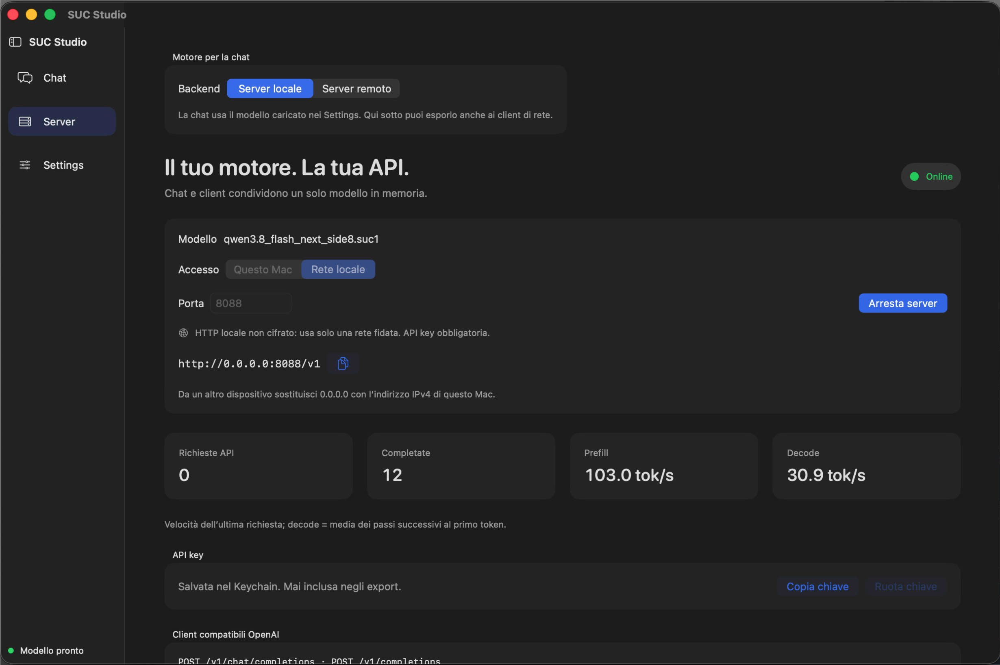

Here you can find the SUC1 model cards published on the
huggingface.co/Ar3ntiz page.
Each card is the README.md of its Hugging Face repository.
| Repository | Base model | SUC1 GB | bpp | KL | Card |
|---|---|---|---|---|---|
| Ar3ntiz/Qwen3.8-27B-side8 | Qwen/Qwen3.8-27B |
16.36 | 4.87 | 0.023 | Qwen3.8-27B-side8.md |
| Ar3ntiz/Qwen3-30B-A3B | Qwen/Qwen3-30B-A3B |
15.93 | 4.17 | 0.064 | Qwen3-30B-A3B.md |
| Ar3ntiz/Qwen3.8-Flash-Next-side8 | Qwen/Qwen3.8-Flash-Next |
96.32 | 4.35 | 0.064 | Qwen3.8-Flash-Next-side8.md |
| Ar3ntiz/DeepSeek-V4-Flash-tcq | deepseek-ai/DeepSeek-V4-Flash-0731 |
96.82 | 2.72 | 0.235 | DeepSeek-V4-Flash-tcq.md |
| Ar3ntiz/GLM-5.3-Flash-tcq | zai-org/GLM-5.3-Flash |
99.00 | 2.53 | 0.307 | GLM-5.3-Flash-tcq.md |
SUC Studio for macOS is self-contained: it already includes the inference engine,
so it’s all you need to run SUC1 models.
Download it from the releases page.
If you prefer to build from source or use the engine on its own, get it from the project’s Git repository at github.com/Ar3ntiz/SUC-LM.
SUC Studio
-

Chat -

Settings -

Server